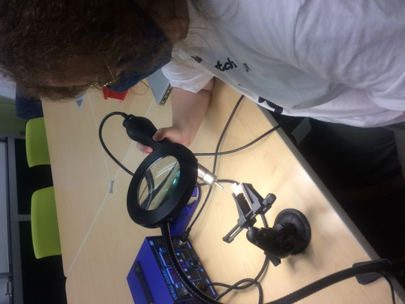

Learning how to solder was fun, My dad was a little jealous. I was in the very first training so the board that I
built wasn't used in the final design. The one in the final project was prebuilt for me.

I designed th 3d printed base by using the lasercut wood file as the top then making another slightly bigger rectangle
an inch below then using the loft tool to connect the two then used the shell tool to hollow it and finally the emboss tool to cut the slot in the top.
In my first print of the base I had forggotten to put a hole into it for the cord to go through, so i made another one with a hole in it.
File design of second base design:https://drive.google.com/file/d/1WV0HU3HX-Kg81cjQO9nQu6ZoNWAoti4c/view?usp=sharing